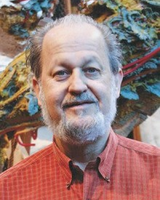
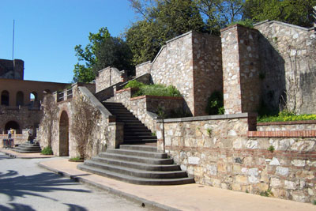

About
Questo sito è stato fatto per il progetto di "Grafica 3D per i Beni Culturali" tenuto dai docenti M. Delle Piane e M. Callieri. In questo sito sarà possibile esplorare i modelli 3D delle statue acquisite mediante delle fotografie che sono processate con l'uso della Dense Stereo Matching
Le statue sono state realizzate dell'artista newyorkese Greg Wyatt, uno scultore che realizza opere interamente in bronzo dallo stile fantasioso che riecheggia diverse figure narrative. Sono state collocate al Giardino Scotto di Pisa giorno 7 maggio 2012, in presenza del sindaco Marco Filippeschi.
Biografia dell'artista

Dall'età di quattro anni Greg Wyatt fu incoraggiato a disegnare e dipingere. In età adolescenziale arrivò la passione per la scultura, dopo un viaggio in Messico con la famiglia nel 1963, durante il quale fu sopraffatto dall'esperienza dei templi Maya. Da qui cominciò a cimentarsi con la terracotta e la porcellana, modellando animali in piccola scala. Dopo il Master alla Columbia University, Wyatt, nel 1972 si iscrisse a una classe di scultura dal vivo alla National Academy of Design. Questa esperienza, un corso di scultura in pietra, e soprattutto, un periodo di insegnamento a San Marino nel 1974, determinarono il fatto per cui Wyatt si concentrò sulla scultura e cominciò a lavorare su larga scala. Alcuni decenni dopo sono arrivate le grandi sculture di Wyatt, come lo “Scholars' Lion” del 2004, un leone nell'atto di incidere (installato nel campus dell'alma mater di Wyatt, la Columbia University di New York) e la monumentale “Soaring American Eagle”, del 2000 (collocata nella corte interna del Dipartimento di Stato di Washington).
L'arte di Wyatt si basa più sull'indagine che sull'affermazione di principi artistici, promuovendo così lo scambio di vedute reciproche al posto della trasmissione di un unico pensiero: attraverso questa interazione l'artistainsegnante e lo spettatore diventano alleati esploratori di un materiale complesso. Ogni scultura non è solo una singola immagine ma una serie di figure interattive tra le quali Wyatt fa crescere la loro capacità di interazione. Sono immagini di natura in movimento immortalate in una situazione emblematica, rappresentazioni narrative che nel loro momento congelato rappresentano qualcosa della storia dalla quale hanno origine: sono forme che portano con sé una testimonianza permanente della loro costruzione.
Metodologie di lavoro

Il Giardino Scotto rappresenta l’ultima destinazione di un’area di Pisa oggetto di continue trasformazioni, come dimostrano anche i risultati dei recenti scavi archeologici qui condotti. La zona era probabilmente già parzialmente insediata in età romana, essendo limitrofa al percorso della via Aemilia Scauri. Abbandonata per tutto l’altomedioevo, fu scelta nel 1095 per la fondazione della chiesa di S. Andrea in Chinzica. Nel XIII secolo si distinse come area artigianale legata alla produzione di ceramica, da cui il nome medievale di Baractularia, mentre nel corso del XIV secolo vi vennero installati una serie di impianti utilizzati per fondere campane bronzee, attività nella quale i maestri pisani eccellevano.
Nel XV secolo, dopo la conquista della città, i fiorentini decisero di costruirvi una Cittadella fortificata (1440-75), progettata con la partecipazione di Brunelleschi e volta al controllo dei cittadini pisani. La costruzione, di cui rimangono le due torri semicircolari ed il muro in pietra con scarpa ad ovest, riutilizzò parte delle mura medievali della città e comportò la completa distruzione del preesistente quartiere.
Nel 1495 i pisani insorti distrussero parzialmente la fortezza; tra il 1509 e 1512, in seguito alla seconda conquista fiorentina, Antonio da Sangallo utilizzò parte della fortezza precedente e costruì un nuovo forte a stella a sud ancora visibile da piazza Guerrazzi ed un bastione sull’Arno.
La fortezza fu smantellata nel 1785 e a posto del bastione fu costruito un palazzo nobiliare che presto divenne proprietà di Domenico Scotto, da cui prese il nome, che adibì la retrostante porzione della fortezza a giardino privato. Nel 1936, quando il Palazzo divenne Regia Questura il parco fu donato alla cittadinanza dagli ultimi eredi.